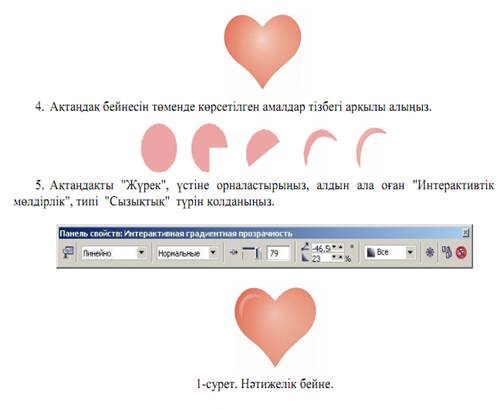

Сабақтың мақсаты: Қабаттармен және онда орындалатын әр түрлі әректтермен таныстыру
Қажетті материалдар мен жабдықтар: ДЭЕМ, тәжірибелік сабақтарды орындауға нұсқаулықтар, тақта, бейне проектор.
Жұмыстың мазмұны мен орындалу реті:
Теориялық бөлім:
Қабаттар онда иллюстрация обьектілерісалынған мөлдір пленкаға ұқсас болады. Мұндай қабаттар қанша болса да жасауға және оларды жеке-жеке басқаруға болады. Қабаттар қағаз бетіне топтамаға жиналып салынады.
Corel Draw да қабаттар обьектілердің композициялы байланысқан топтарын белгілеуге мүмкіндік береді. Қабатты уақытша көрінбейтіндей етіп жасауға немесе оны басылмайтын деп жариялап, баспаға шығармауға болады. Берілген қабаттың ішіндегісін өзгертпеу үшін ( бұзбау үшін) оны бұғаттау (блокировка) жеткілікті болады. Күрделі иллюстрацияны қабаттарға бөлу жұмыстары айтарлықтай жеңілдетеді және құрылымды жасайды.
Қабаттың белгішесінің қасында оның атрибуттарының белгішесі бар. Көз белгішесі қабаттың көру атрибутын басқаруға мүмкіндік береді. Қабат көрінетін кезде белгіше-қара,көрінбейтін кезде-сұр болады.
Оң жақтағы белгішедегі принтер басылымдық атрибутын символдайды. Егер белгіше қара болса, онда құжаттар принтерге шығарғанда осы қабаттағы обьектілер басылып шығады, егер сұр болса басылмайды.
Қарындаш белгішесі қабатты бекітуге және оны редакцияланбайтын жағдайға келтіруге мүмкіндік береді. Үйіліп қойылатын обектілерді жеке қабаттарға орналастыру өте қолайлы, сонда барлық қабаттар жоғарыды орналасқан обьектілермен бірге бекітіп, олардың астындағы обьектілерді белгілеу қиыншылықтарынан құтылуға болады.
Үлгі қабаттар
Corel Draw-ды тек факс блактерін жасау үшін ғана емес , компьютерде қағаз мәтін енгізе отырып, факстың өзінде жасауға қолдануға болады. Үлгі қабат - мазмұны құжаттың барлық беттеріне автоматты түрде кқөшірілетін қабат. Пайдаланушы құжаттың барлық қайталанатын элементтерін жеке қабатқа салып, оны үлгі деп жариялауы керек. Егер құжаттардың бір –бірінен айырмашылықты екі сериясын алу керек болса, оларды бір файлға қоюға болады, тек бұл жағдайда екі үлгі (шаблон) қажет. Corel Draw барлық үлгі қабаттарын бір бетке үлгі бетке орналастырады. Үлгі беттер тізімінің төменгі жағында орналасады. Егер файл жаңадан жасалған және бос болса, бетте үш үлгі –қабат автоматты түрде жасалады: сетка (тор), направллющие (бағыттаушылар), рабочий стол (жұмыс үстелі). Тор мен бағыттаушының барлық бетке бірдей болатындығы олардың үлгі қабатта жасалғандығымен түсіндіріледі.
3. Үлгі –бетте үш стандартты үлгі қабаттардан басқа ештеме жоқ. Бағыттаушылар-бұл онда пайдаланушылар жасаған обьектілері бар жалғыз үлгі – қабат. Бағыттаушы қабаттың белгішесінің қасында «+» белгісіне тінтуірмен шертіңіз.Сіздердің алдарыңызда құжатта бар бағыттаушылардың тізімі ашылады.
4. Кез келген бағыттаушының белгішесінде шертіңіздер. Құжаттың бетінде ол белгіленген болып шығады. Corel Draw үшін бағыттаушылар кез –келген басқалар сияқты обектілер болып табылады. Егер принтер белгішесінде тінтуірді шертіп, бағыттаушы қабатын басылатын жасасаңыздар,құжатты әуелі бағыттаушы қабатын басылатын жасасаңыздар, құжатты әуелі бағыттаушылармен бірге басып шығара аласыздар.
Бланктың үлгі-қабатта болғандығы өте қолайлы. Бланкке өзгертулер енгізу керек болғанда, оны әр көшірме мен әр бетте жасаудың қажеті жоқ-үлгіні өзгерту жеткілікті.
Тапсырмалар:
1 тапсырма. "Градиенттік бояумен құю" және "Интерактивтік мөлдірдік" құралдарының көмегімен "Жүрек" бейнесін алу (1-сурет).
1. Жүрек суретін салып, оған радиальдық бояумен құю командасын пайдаланып, тӛмендегі бейнені алыңыз.
2. Жүрек суретінің көшірмесін алыңыз.
3. Сурет көшірмесіне "Интерактивтік мөлдірдік" эффектісін қолданыңыз да, оны бірінші суреттің үстіне орналастырыңыз.
